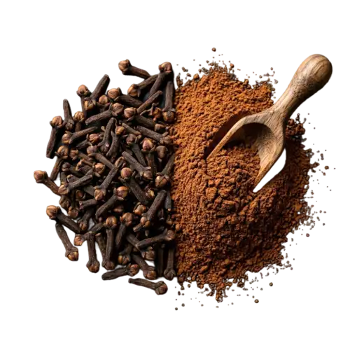

We are certified Ceylon Clove suppliers from Sri Lanka, exporting premium organic whole cloves with high eugenol oil content and warm peppery flavor to the EU, USA, and 40+ countries worldwide — serving culinary, essential oil, and wellness industries.
Our Ceylon Clove (botanical: Eugenia caryophyllus) is cultivated in the misty central and southern highlands of Sri Lanka. Known for its high eugenol oil content and warm, peppery flavor, these handpicked clove buds are sun-dried to preserve aroma and potency.
Sri Lanka – Matale & Kandy Districts
Dried Whole Buds
12 – 15% Eugenol
Essential Oils · Culinary · Oral Care · Herbal Blends

Ceylon Clove is prized for its higher essential oil yield (12-15% eugenol) compared to lower-grade cloves from Indonesia or Madagascar, ensuring intense aroma and potent flavor.
Deep brown color, uniform bud shape, and strong pungency are all signs of superior grade. Our cloves are carefully selected for consistency and quality.
Grown without synthetic pesticides using organic methods that preserve soil health and biodiversity. No irradiation or fumigation.
As global buyers shift towards traceable, ethically sourced ingredients, Sri Lankan cloves offer a sustainable and trusted solution for premium brands.
Essential in garam masala, chai blends, pickling, baking, and global cuisine.
Steam-distilled for use in natural pain relief, oral hygiene, and aromatherapy.
Rich in antioxidants and antimicrobial compounds. Supports digestion and immunity.
Our cloves are grown with care by smallholder farmers under strict organic guidelines. No irradiation or fumigation. 100% natural and traceable.
Organic
Vegan
Gluten-Free
Non-GMO
| Botanical Name | Eugenia caryophyllus |
| Form | Whole Buds (Handpicked) |
| Moisture | < 11% |
| Oil Content | 12–15% Eugenol |
| Color | Rich Reddish-Brown |
| Grading | Grade 1 · Large Size · High Density |
| Packaging | 100g · 500g · 1kg · Bulk Cartons |
| Shelf Life | 24 Months |